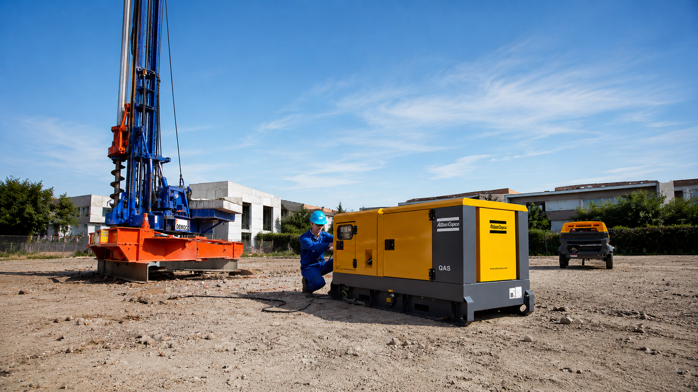
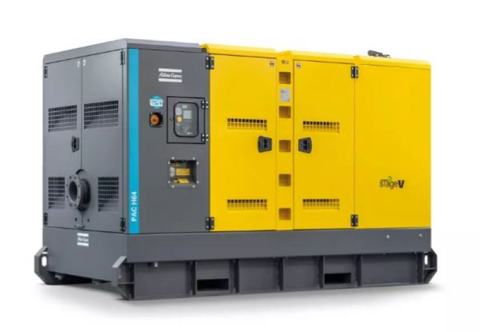
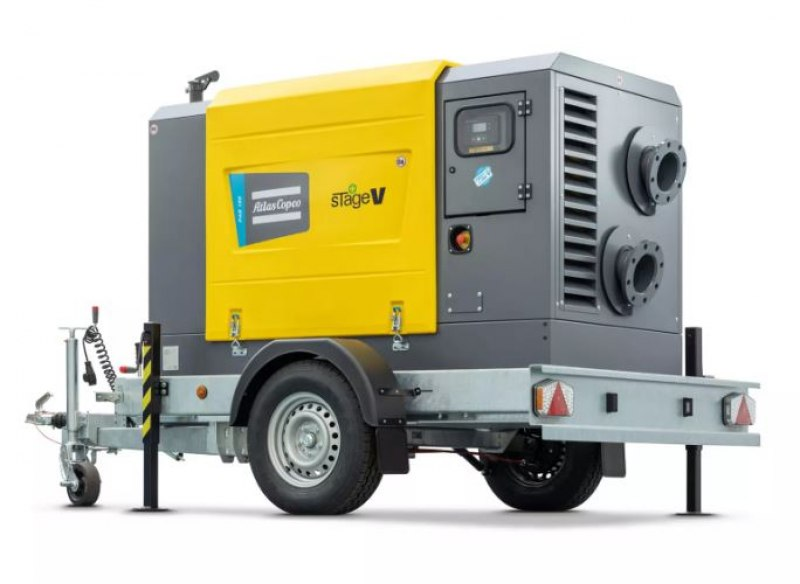
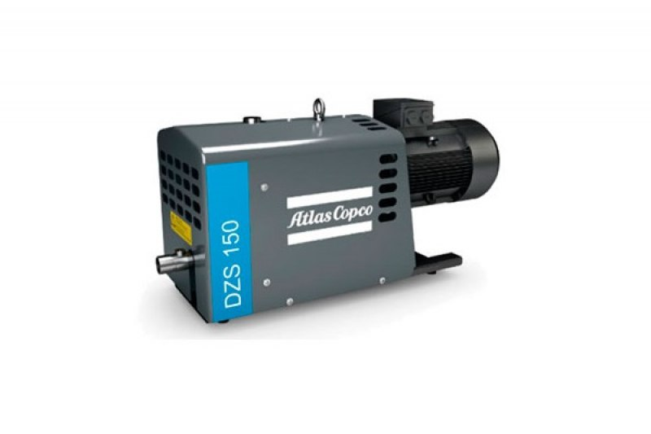
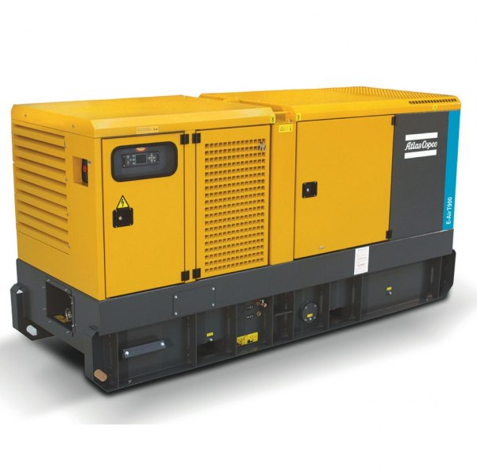

Compressor de Parafuso
Compressores de Parafuso
Linha GA com tecnologia VSD⁺ para ar comprimido contínuo, eficiente e econômico.

Há mais de 40 anos a ACB Sul fornece compressores, geradores e assistência técnica Atlas Copco para a indústria do Rio Grande do Sul e Santa Catarina.
A ACB Sul atende operações que exigem disponibilidade, eficiência e suporte técnico — do compressor de parafuso ao gerador Stage V.
Linha GA com tecnologia VSD⁺ para ar comprimido contínuo, eficiente e econômico.
Robustos e versáteis para oficinas, pequenas indústrias e uso intermitente.

Geradores Stage V de alta eficiência para obras, eventos e backup industrial.

Equipamentos móveis Stage V para construção civil, mineração e serviços de campo.
Secadores, filtros e purificadores para garantir ar comprimido limpo, seco e de qualidade.

Tecnologia de vácuo industrial para embalagem, processos químicos e manuseio de materiais.
Unimos a tecnologia da maior fabricante mundial de compressores com atendimento técnico local, ágil e de confiança. É essa combinação que garante disponibilidade e previsibilidade para a sua operação.
Solicitar Orçamento TécnicoLinha completa, garantia de fábrica e suporte oficial da marca.
Kits de revisão 250h / 500h / 1000h e peças genuínas Atlas Copco.
Equipe técnica especializada em preventiva e corretiva no RS e SC.
Quatro décadas de engenharia aplicada em ar comprimido no Sul.
Equipamentos selecionados para operações que não podem parar — disponíveis para venda ou locação com pronta-entrega.
64 kVA com motor Stage V, baixo ruído e baixo consumo para obras e backup industrial.

Gerador trifásico de 60 kVA com tanque de longa autonomia para uso prolongado em campo.
Vácuo seco tipo garra para processos industriais que exigem confiabilidade e baixa manutenção.
Da primeira conversa ao pós-venda, cada etapa é conduzida com critério técnico para garantir a disponibilidade do seu equipamento.
Entendemos pressão, vazão, regime de uso e a aplicação da sua operação.
Indicamos o equipamento Atlas Copco ideal — eficiência e custo de operação.
Apresentamos proposta clara de venda ou locação, com prazos e condições.
Pronta-entrega, instalação e start-up acompanhados pela nossa equipe.
Planos por horímetro com peças originais para evitar paradas não programadas.
Assistência técnica especializada em campo em todo o RS e SC.
Na ACB Sul, cada equipamento é tratado como um ativo crítico da operação. Combinamos décadas de experiência prática com a tecnologia Atlas Copco para entregar ar comprimido e energia com confiabilidade.
A confiança na indústria não se constrói com promessa, mas com entrega. Por isso valorizamos relações de longo prazo e a satisfação de quem opera no dia a dia.
Estamos prontos para analisar sua demanda e apresentar a solução técnica de maior disponibilidade — para compra ou locação.
Recebemos seus dados. Um especialista da ACB Sul retornará em breve no horário comercial.
Esclarecemos os principais pontos sobre nossa atuação, produtos e serviços.